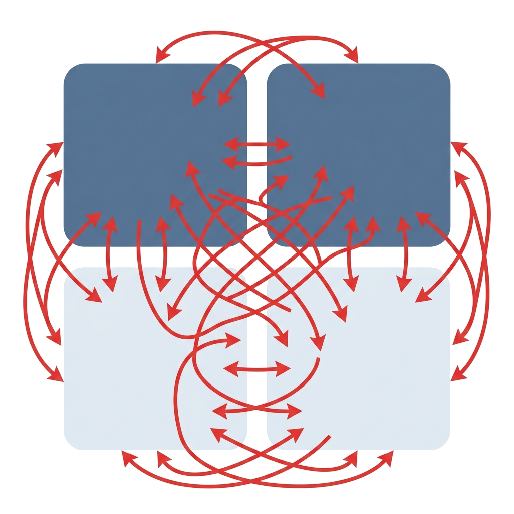

Lakehouse als Enabler fürMachine Learning im Gesundheitswesen
Open Source, On-Premise, Data Engineering und ML auf einer Plattform
Leitfrage
Welche Datenplattform braucht produktives Data Engineering und ML im Gesundheitswesen?
👨💻
Sebastian Gobst
DATA MART Consulting
👨⚕️
Yannik Queisler
KVWL
[SG] Herzlich willkommen, schön, dass Sie da sind. Unser Titel klingt erst einmal nach einem dieser großen Plattform-Versprechen — „Lakehouse als Enabler für Machine Learning". Genau das wollen wir aber nicht abstrakt halten. Wir zeigen Ihnen heute eine konkrete Implementierung, die bei der Kassenärztlichen Vereinigung Westfalen-Lippe produktiv läuft — Open Source, On-Premise, von den Rohdaten bis zum ML-Modell. [YQ] Und wir nehmen Sie an einem echten Fachproblem mit, an dem man am Ende sogar messen kann, ob sich der ganze Aufwand gelohnt hat. Die Leitfrage über allem: Welche Datenplattform braucht man eigentlich, damit Data Engineering und Machine Learning im Gesundheitswesen produktiv funktionieren? Dazu stellen wir uns kurz vor.
DATA MART bringt die Perspektive aus DWH-, BI- und Datenarchitekturprojekten ein.
Sebastian Gobst
Principal Consultant
⚙ Schwerpunkt
Optimierung von Datenlandschaften
BI/DWH — zunehmend Open Source Lakehouse
🎤 Rolle im Vortrag
Architekturperspektive & Migrationslogik
Einordnung gegen klassische DWH-Muster
Architektur
Migration
BI/DWH
[SG] Mein Name ist Sebastian Gobst, ich bin Principal Consultant für Systemarchitektur bei der DATA MART Consulting. Wir kommen klassisch aus der Welt der Data Warehouses und Business Intelligence und begleiten Kunden dabei, ihre Datenlandschaften zu optimieren — und zunehmend eben auch in Richtung Open-Source-Lakehouse zu modernisieren. Meine Rolle heute ist die Architekturperspektive: Wie sieht das Zielbild aus, welche Migrationslogik steckt dahinter, und wie grenzt sich das Ganze von klassischen DWH-Mustern ab. Den zweiten Teil, das Machine Learning, übernimmt mein Kollege — stell dich gern vor.
Die KVWL bringt die On-Premise-Implementierung, das durchgängige KI-/ML-Beispiel und die Lessons Learned ein.
Yannik Queisler
Data Engineer, KVWL
⚙ Schwerpunkt
Spark · Airflow · Delta Lake · ML Engineering
Von der Datenbasis bis zur produktiven Anwendung
🎤 Rolle im Vortrag
KI-/ML-Teil: Patientenbildung als Leitbeispiel
Lessons Learned aus dem Aufbau
Leitmotiv: Erst Datenqualität und Plattform, dann konkrete ML-Nutzenfälle — kein unternehmensweiter Chatbot ohne belastbare Datenbasis.
[YQ] Sehr gerne. Ich bin Yannik Queisler, Data Engineer bei der Kassenärztlichen Vereinigung Westfalen-Lippe. Mein Alltag ist Spark, Airflow, Delta Lake — und zunehmend ML Engineering. Ich bringe heute die konkrete On-Premise-Umsetzung mit, unser durchgängiges KI-Beispiel und die Lessons Learned aus dem Aufbau. Wichtig zum Kontext: KI ist bei uns ein neues Handlungsfeld. Wir führen das bewusst über greifbare Fachprozesse ein — nicht mit einem großen unternehmensweiten Chatbot, der auf einer wackeligen Datenbasis steht, sondern entlang der Reihenfolge erst Datenqualität, dann Plattform, dann konkrete Nutzenfälle. Warum diese Reihenfolge so entscheidend ist, dazu kommen wir direkt.
Produktive KI scheitert selten am Modell — sondern an Datenhistorie, Datenqualität und Reproduzierbarkeit .
Governance vs.
Machine Learning
Datenqualität
Verantwortlichkeiten
Datenhistorie
Reproduzierbarkeit
Reporting-Stabilität vs.
„Der Engpass für KI im Gesundheitswesen ist nicht das Modell ,reproduzierbare, validierbare Datenstände liefert.“
[YQ] Wenn heute über KI gesprochen wird, geht es fast immer ums Modell. Unsere Erfahrung — und das deckt sich mit der Forschung zu Data-centric AI und Technical Debt in ML-Systemen — ist eine andere: Produktive KI scheitert selten am Modell. Sie scheitert an der Datenhistorie, an der Datenqualität, an unklaren Verantwortlichkeiten und an fehlender Reproduzierbarkeit. [auf den Eisberg zeigen] Das Modell ist die sichtbare Spitze; der große Teil unter Wasser sind die Daten, die Historie, die Governance. Robuste Data Warehouses liefern stabile Berichte — aber Machine Learning stellt neue Anforderungen, und es entstehen Spannungen: Governance gegen Iterationsgeschwindigkeit, Reporting-Stabilität gegen Feature-Engineering, kuratierte Datenprodukte gegen die rohe Historie. Bei Gesundheitsdaten kommt verschärfte Nachvollziehbarkeit dazu. [langsamer, das ist das Versprechen] Deshalb unser Leitsatz für die nächsten 40 Minuten: Der Engpass ist nicht das Modell, sondern eine Plattform, die reproduzierbare, validierbare Datenstände liefert — und das zeigen wir an einem Problem, das man tatsächlich messen kann. Auf genau diesen Satz kommen wir am Ende zurück.
Von der Architektur zur Umsetzung und zu einem validierbaren KI-Leitbeispiel .
Ausgangslage
SSIS-/DWH-Welt und uneinheitliche Lake-Zonen
Zielarchitektur
Multi-Zone-Functional Lakehouse & Orchestrierung
Leitbeispiel
Patientenbildung (Record Linkage) und Anomalieerkennung
Lessons Learned
Was hat sich bewährt, was bleibt schwierig?
[YQ] Unser Weg durch den Vortrag folgt genau dieser Logik. Wir starten bei der Ausgangslage — einer klassischen SSIS- und DWH-Welt mit uneinheitlichen Lake-Zonen. Dann zeigt Sebastian die Zielarchitektur, das Multi-Zone-Functional Lakehouse, samt Orchestrierung und Technologieentscheidungen. Danach übernehme ich mit unserem Leitbeispiel: der Patientenbildung, die im Kern ein Record-Linkage- und Survivorship-Problem ist. Ein zweites Beispiel — Anomalieerkennung in Abrechnungsdaten — streifen wir bewusst kürzer, und ich sage Ihnen später auch, warum. Der rote Faden ist dabei immer: Nutzen früh greifbar machen, ohne die Datenplattform zu überspringen. Und ganz am Ende stehen die Lessons Learned — was sich bewährt hat und was schwierig bleibt. Sebastian, fang gern mit der Ausgangslage an.
01
Kapitel 01
Lakehouse, Architektur und Orchestrierung
Von den Herausforderungen der alten SSIS-Landschaft zum Multi-Zone-Functional Lakehouse: Die Basis für zuverlässiges Data Engineering und Machine Learning.
[SG] Wir steigen nun in den ersten Hauptteil ein: Lakehouse, Architektur und Orchestrierung. Wir schauen uns die Ausgangslage an, führen das Multi-Zone-Functional Lakehouse ein und beleuchten unsere Technologieentscheidungen.
Der Umbau startet nicht bei Tools, sondern bei der Frage, wo welche Logik verantwortlich liegt .
Wo wird Logik implementiert — im Projekt und im Layer?
Welche Technologie passt für welchen Schritt — PySpark, dbt, SQL?
Welche Garantien darf ein Downstream-Consumer von einem Dataset erwarten?
Übergeordnetes Ziel: Datentransformationen aus der alten SSIS-Welt ablösen.
[SG] Danke, Yannik. Der Ausgangspunkt war eine gewachsene SSIS- und Data-Warehouse-Welt. Das übergeordnete Ziel war klar: Die Transformationen aus dieser alten Welt ablösen. Spannend ist aber, dass der Umbau gar nicht bei den Tools beginnt, sondern bei einer scheinbar simplen Frage — wo liegt welche Logik eigentlich verantwortlich? Drei Leitfragen haben uns durch das ganze Projekt begleitet: Erstens, wo wird Logik implementiert — in welchem Projekt und in welchem Layer? Zweitens, welche Technologie passt für welchen Schritt — PySpark, dbt oder einfaches SQL? Und drittens, eine oft unterschätzte Frage: Welche Garantien darf ein nachgelagerter Consumer von einem Datensatz überhaupt erwarten? Wenn man diese Fragen nicht beantwortet, bekommt man genau die Probleme, die wir vorher hatten.
Uneinheitliche Layer-Verantwortlichkeiten erzeugen kognitive Last, doppelte Logik und schwache Garantien.

Landing
Staging
History
Analysis
Gleichzeitig temporäre Ablage und unflexibles Archiv
Nur sporadisch genutzt, wilder Mix aus Formaten
Mischmasch aus Rohhistorie und Fachlogik
Stark von SSIS-Altprozessen geprägt
Konsequenz: Unklare Codelokalisierung, extrem aufwendiges Reprocessing und hoher Bus-Faktor.
[SG] Schauen wir auf die alte Zonenlogik. Auf dem Papier gab es Zonen — aber ihre Verantwortlichkeiten waren unscharf. Die Landing Zone war gleichzeitig temporäre Ablage und Archiv. Die Staging Zone wurde nur sporadisch genutzt, in unterschiedlichsten Formaten. Die History Zone war ein Mischmasch: teils Rohhistorie, teils Standardisierung, teils schon Fachlogik. Und die Analysis Zone war noch stark von den alten SSIS-Prozessen geprägt. [auf die chaotischen Pfeile zeigen] Die Konsequenz sehen Sie an diesen Pfeilen: Man weiß nicht, wo eine bestimmte Logik liegt, Reprocessing wird zur Qual, und der Bus-Faktor ist hoch — es hängt zu viel an einzelnen Köpfen. Genau das wollten wir auflösen. Bevor ich zeige, wie, kurz das Prinzip dahinter.
Lakehouse heißt hier: offene Speicherung plus Warehouse-Garantien für Data Engineering, Analytics und ML.
[SG] Der Begriff Lakehouse wird viel benutzt, deshalb sage ich, was wir konkret darunter verstehen. Auf der einen Seite die Offenheit eines Data Lake — ein einheitlicher Speicher für strukturierte, semi-strukturierte und perspektivisch weitere Datenformen. Auf der anderen Seite die Garantien eines Warehouse. Konkret heißt das bei uns: ACID-Tabellen und paralleler Lese- und Schreibzugriff über Delta Lake, Schema-Validierung, ein Metadatenkatalog, Lineage und Zugriffskontrolle. Für die Governance setzen wir DataHub ein — als Katalog, für Discovery, Ownership, Lineage und Data Contracts. Performance holen wir über optimierte Dateiformate, Statistiken und Compaction. Und der entscheidende Effekt: BI, Analytics und ML laufen auf derselben Plattform — ohne dass jeder sich seine eigene Schatten-ETL nebenbei baut. Wie das räumlich aussieht, zeigt das Zielbild.
Die neue Architektur definiert Zonen über Funktionen und Verträge , nicht über historisch gewachsene Namen.
Landing
Optional & transient
Raw Zone
Unveränderl. Historie
Process Zone
Qualität & Standard.
Access Zone
Datenprodukte für
Prinzip: Jede Zone hat eine klar definierte Aufgabe und ein unverhandelbares Versprechen an die nächste Schicht.
Governance · DataHub
[SG] Das hier ist das zentrale Bild des Vortrags — merken Sie es sich, es kommt später im ML-Teil immer wieder. Wir definieren Zonen jetzt über ihre Funktion und über klare Verträge, nicht mehr über historisch gewachsene Namen. Von links nach rechts: Die Landing Zone ist optional und transient. Die Raw Zone ist die unveränderliche Rohdatenhistorie. Die Process Zone sorgt für technische Qualität und Standardisierung. Und die Access Zone enthält die fachlichen Datenprodukte — für BI, Analytics und eben auch für ML. Horizontal also die Zonen mit klaren Verträgen, und vertikal ziehen sich Orchestrierung und Governance durch alle Schichten. [kurze Pause] Der Trick ist: Jede Zone hat eine klar definierte Aufgabe und ein Versprechen an die nächste. Gehen wir die wichtigen Zonen einzeln durch.
Rohdatenhistorie ist die Grundlage für Audits, Reprocessing und reproduzierbare ML-Datenstände .
Landing
→
Raw
→
Process
→
Access
Landing Zone
Kurzlebig und optional
Keine Transformationen
Automatische Bereinigung
s3://raw-zone/controlling/voucher/
├── load_date=2025-11-14/
│ ├── voucher_part-00001.jsonl.gz
│ ├── voucher_part-00002.jsonl.gz
│ └── metadata.json
├── load_date=2025-11-15/
│ ├── voucher_part-00001.jsonl.gz
│ └── metadata.json
└── append-only:
neuer Lauf = neuer Ordner
Raw Zone (System of Record)
Langfristige Historisierung
Append-only, Schema-on-Read
Minimale Validierung (Parsbarkeit, Größe)
{
"source" : "controlling.voucher" ,
"path" : "load_date=2025-11-15/..." ,
"ingest_timestamp" : "2025-11-15T10:12:00Z" ,
"file_count" : 2 ,
"total_bytes" : 14580213 ,
"sha256" : "7f9c...e31a" ,
"check_parsable" : true ,
"checks_passed" : true
}
Eine unveränderliche Append-Only-Historie garantiert, dass jeder ML-Trainingsstand exakt reproduziert werden kann.
[SG] Beginnen wir links. Die Landing Zone ist bewusst kurzlebig: keine Transformationen, nur Anlieferung, und nach kurzer Aufbewahrung automatisch bereinigt. Das eigentlich Wichtige ist die Raw Zone. Sie ist unser System of Record — langfristig historisiert, append-only, quellnah, mit Schema-on-Read. Wir schreiben technische Metadaten mit: Quelle, Pfad, Ladezeitpunkt, Dateigröße, Checksumme. Und wir validieren hier nur minimal — Parsbarkeit, Existenz, Größe, technische Integrität, mehr nicht. [auf den Callout zeigen] Warum ist das so streng? Weil eine unveränderliche, append-only Historie bedeutet: Wir können jederzeit exakt denselben Datenstand wiederherstellen. Das ist die Grundlage für Audits, für Reprocessing — und, das wird im ML-Teil entscheidend, für reproduzierbare Datenstände. Yannik wird später drei verschiedene Algorithmen gegen exakt denselben Raw-Stand testen. Das geht nur, weil Raw wirklich raw bleibt.
In der Process Zone wird aus historisierten Rohdaten eine technisch verlässliche Grundlage.
Landing
→
Raw
→
Process
→
Access
Data Contract
✓ Erlaubt (Technische Qualität)
Standardisierung von Formaten & Datentypen
Delta Lake als robustes Zielformat
Bereinigung fehlender Werte & Inkonsistenzen
Deduplikation & Schema-Evolution
✗ Verboten (Fachlichkeit)
Verbraucherspezifische Denormalisierung
Fachliche Marts & Geschäftslogik
Zerstörung der Quell-Granularität
Process Zone Output (Delta Lake Structure)
s3://process-zone/controlling/voucher/
├── _delta_log/
│ ├── 00000000000000000000.json
│ └── 00000000000000000001.json
├── part-00000.snappy.parquet
├── part-00001.snappy.parquet
└── part-00002.snappy.parquet
Architect's Note: Prinzip: Jede Zone hat eine klar definierte Aufgabe und ein unverhandelbares Versprechen an die nächste Schicht.
[SG] Eine Zone weiter: die Process Zone. Hier wird aus der historisierten Rohmasse eine technisch verlässliche Grundlage. Wir standardisieren Formate und Datentypen, nutzen Delta Lake als robustes Tabellenformat, und wir bereinigen technisch — fehlende Werte, Inkonsistenzen, Deduplikation, Schema-Evolution. Provenienz und Laufmetadaten laufen mit. Entscheidend sind aber die Verträge: Was ist hier erlaubt, was nicht? Erlaubt ist dataset-unabhängige Standardisierung und Integration. Verboten ist verbraucherspezifische Denormalisierung und das Bauen fachlicher Marts. Denn sobald man Fachlogik in die Process Zone schmuggelt, hat man wieder den Mischmasch von vorhin. Fachlichkeit gehört eine Zone weiter.
Die Access Zone ist der Ort für fachliche Semantik, konsumierbare Datenprodukte und Feature Sets.
Landing
→
Raw
→
Process
→
Access
S3 Bucket Directory
s3://access-zone/controlling/
fact/
belege/
_delta_log/
00000000000000000000.json
00000000000000000001.json
...
part-00000-uuid.snappy.parquet
part-00001-uuid.snappy.parquet
part-00002-uuid.snappy.parquet
dim/
kostenart/
_delta_log/
part-*.parquet
controllingobjekt/
_delta_log/
part-*.parquet
...
Datenprodukt
Star Schemas
(For BI & Reporting)
Wide Tables
(For deep analytics)
ML Feature Sets
(Serving-nahe Tabellen)
Strikte Regeln der Access Zone
Dokumentierte Metrikdefinitionen und SLOs
Versionierung bei Breaking Changes
Keine Rückkopplung in Upstream-Zonen (Reverse Dependencies verboten)
[SG] Und damit die Access Zone — der Ort, an dem Fachlichkeit lebt. Hier entstehen fachliche Transformationen, Aggregationen, Star Schemas, Wide Tables. Hier passiert Feature Engineering und es entstehen serving-nahe Tabellen für ML. Wichtig ist, dass das echte Datenprodukte sind: mit dokumentierten Metrikdefinitionen, fachlicher Granularität und Service-Level-Objectives. Bei Breaking Changes versionieren wir und lassen alte Stände parallel auslaufen. Wir testen auf Metrikkonsistenz, dimensionale Integrität und Freshness. Und eine klare Regel: keine Rückkopplung zurück in Raw oder Process — außer über dokumentierte Backfill- und Reconciliation-Verfahren. Damit das in der Praxis funktioniert, braucht es die richtigen Werkzeuge je Zone.
Der Stack trennt technische Verarbeitung und fachliche Modellierung klarer als vorher.
Zone Map Technology Mapping
Orchestration
⚙ PySpark
(Ingestion, Standardisierung, komplexe ML-Algorithmen)
🗄 dbt
(Fachliche Modelle, SQL-Analytics, Lineage)
Landing
→
Raw
→
Process
→
Access
▲ Delta Lake
(ACID, Schema Enforcement, Time Travel)
Governance
🛡
DataHub
(Data Contracts,
[SG] Jetzt zu den Werkzeugen — und Sie sehen, sie ordnen sich sauber den Zonen zu. PySpark nutzen wir für Ingestion, technische Standardisierung, große Datenmengen und für komplexe Algorithmen, die man in SQL nicht sinnvoll abbildet — das wird im ML-Teil wichtig. dbt setzen wir für die fachlichen Modelle in der Access Zone ein, inklusive Tests, Dokumentation und Lineage. Delta Lake zieht sich als Tabellenformat durch alle Zonen — ACID, Schema Enforcement, MERGE-Upserts, Time Travel. Der Hive Metastore gibt uns zentralen Tabellen- und Metadatenzugriff. Und DataHub ist die Brücke zwischen technischen Tabellen und fachlicher Nutzbarkeit — Katalog, Ownership, Lineage, Data Contracts. Ein Prinzip dabei, das uns viel gespart hat: erst einfache, containerisierte Services — und die Architektur trotzdem so schneiden, dass eine spätere Migration Richtung Kubernetes möglich bleibt. Wie wir das orchestrieren, sehen Sie als Nächstes.
Reproduzierbarkeit entsteht erst, wenn Jobs, Abhängigkeiten und Metadaten nahtlos orchestriert werden.
Landing
→
Raw
→
Process
→
Access
⚙
Airflow DAG
Quality Gates
Kontrollieren Übergänge, bevor Transformationen in die nächste Zone rutschen.
[SG] Eine Architektur allein macht noch keine Reproduzierbarkeit. Die entsteht erst, wenn man Datenstände, Jobs, Abhängigkeiten, Qualitätschecks und Metadaten zusammenführt. Dafür nutzen wir Airflow als Steuerungsschicht über Ingestion, Processing und Access-Produkte. Die DAGs machen Abhängigkeiten, Wiederanläufe und Scheduling explizit — nichts läuft mehr im Verborgenen. Pro Lauf schreiben wir Pipeline-Metadaten mit: Quelle, Zeitraum, Extraktzeitpunkt, Row Counts, Checksummen, Status. DataHub bleibt der sichtbare Governance-Layer. Und zwischen den Layern sitzen Quality Gates — [auf die Schlösser zeigen] —, sodass keine Transformation unkontrolliert von einer Zone in die nächste rutscht. Das gibt uns kontrollierte Übergänge von explorativer Logik hin zu produktiven Pipelines. Bevor Yannik übernimmt, eine Frage, die uns oft gestellt wird: Braucht man dafür nicht riesige Infrastruktur?
Enterprise-Grade Lakehouse funktioniert auch ohne sofortige Kubernetes-Komplexität .
Startpunkt KVWL
3 Red-Hat-Umgebungen: dev · test · prod
Podman / systemctl für Containerisierung
Sehr kleiner Admin-Footprint
Betriebsmodell
Schrittweiser Umzug ohne Architekturbruch
Konsequente Containerisierung von Tag 1
Zielbild
Unternehmensweites Kubernetes vorhanden
Gleiche Container — kein Bruch
Skalierung im Terabyte-Maßstab
✓
Terabyte-Verarbeitung bereits mit einfachem Setup möglich
Lesson: So simpel wie möglich starten und die technische Reife gezielt ausbauen.
[SG] Die klare Antwort ist: nein. Enterprise-grade Lakehouse heißt nicht, dass man am ersten Tag ein Kubernetes-Cluster oder einen großen Cloud-Anbieter braucht. Wir sind bei der KVWL mit drei Red-Hat-Umgebungen gestartet — dev, test, prod —, mit Podman und systemctl für Containerisierung und Betrieb, und das mit einem sehr kleinen Admin-Footprint. Das Ergebnis: Wir verarbeiten bereits mit diesem einfachen Setup Daten im Terabyte-Maßstab, mit klaren Umgebungen und reproduzierbaren Containern. Und die Weiterentwicklung gibt uns recht — inzwischen gibt es ein unternehmensweites Kubernetes, und wir ziehen Schritt für Schritt um, ohne großen Architekturbruch, weil eben alles sauber containerisiert war. Die Lesson, die wir Ihnen mitgeben: so simpel wie möglich starten und die technische Reife gezielt ausbauen. [kurze Pause] Damit steht die Plattform. Und jetzt wird es spannend — Yannik, was lässt sich darauf bauen?
02
Kapitel 02
ML am Beispiel Patientenbildung
Wie das Lakehouse als Enabler für Machine Learning dient — am konkreten Beispiel Patient Record Linkage und Survivorship.
[SG] Die Plattform steht. Und jetzt wird es spannend — Yannik, was lässt sich darauf bauen?
[YQ] Danke, Sebastian. Die Plattform steht — jetzt zeigen wir an einem echten Fachproblem, was sie ermöglicht. Was Machine Learning wirklich braucht: konsistente Daten, stabile Entitäten, nachvollziehbare Features. Und das stabilste Element ganz oben — stabile Entitäten — ist unser Einstieg.
Der Engpass ist selten der Modellaufruf, sondern reproduzierbare, fachlich verstandene, governancefähige Datenstände .
Was Machine Learning zwingend braucht
✓
Konsistente Trainings- und Scoring-Daten
✓
Stabile Entitäten Patient · Praxis · Honorargruppe · Quartal
✓
Nachvollziehbare Feature-Definitionen
✓
Auditierbarkeit & Data Lineage
✓
Datenqualitätschecks vor Modelltraining
✓
Daten- und Code-Versionierung
Landing
→
Raw
→
Process
→
Access
Governance / DataHub
Stabiles Element
Entitäten
Stabile Patient-IDs sind die Grundlage für alle folgenden ML Use Cases.
[YQ] Danke, Sebastian. Die Plattform steht — jetzt zeigen wir an einem echten Fachproblem, was sie ermöglicht. Und ich will direkt an unseren Leitsatz von vorhin anknüpfen: Der Engpass ist selten der Modellaufruf. Was Machine Learning wirklich braucht, ist all das hier — und Sie sehen, jede Anforderung hängt an einer Zone der Architektur, die Sebastian gerade gezeigt hat. Wir brauchen konsistente Trainings-, Validierungs- und Scoring-Daten. Wir brauchen nachvollziehbare Feature-Definitionen. Wir brauchen stabile Entitäten — Patient, Praxis, Honorargruppe, Quartal. Wir brauchen Datenqualitätschecks vor dem Training, Daten- und Code-Versionierung, Auditierbarkeit der Ergebnisse. Und wir brauchen Katalog und Lineage, damit Teams Daten nicht nur finden, sondern verantwortbar nutzen. Genau diese Liste lösen wir jetzt an einem konkreten Beispiel ein — und das stabilste Element ganz oben, „stabile Entitäten", ist unser Einstieg.
Patientenbildung ist im Kern ein Patient-Record-Linkage-Problem — und verbindet fachlichen Nutzen mit messbarer Validierung.
Landing
→
Raw
→
Process
→
Access
Quelle ABR1 (Abrechnung)
Müller, Hans
· 1980-03-12
EGK: 123456
Quelle ABR2 (Abrechnung)
Mueller, H. · 1980-03-12
PLZ: 44139
Quelle KVUEPP (KV-Daten)
Müller, Hans-Peter · 12.03.1980
Versicherungsnr: 9X1234
Golden Record / MPI
Name:
Müller, Hans-Peter
Geburtsdatum:
1980-03-12
Validierung:
✓ Konsolidiert
ID: 12456‑STABLE
Ziel: Stabile Patient-IDs als Grundlage für Analysen und nachgelagerte ML Use Cases. Klassisches ML ist oft der kürzeste Weg zu messbarem Nutzen auf strukturierten Daten.
[YQ] Unser Leitbeispiel heißt intern „Patientenbildung". Der entscheidende Schritt war zu erkennen: Das ist kein KVWL-Sonderfall, sondern ein bekanntes Problem aus der Forschung — „Patient Record Linkage". [auf das Visual zeigen] Wir haben dieselbe Person in mehreren Quellen, mit leicht abweichenden Schreibweisen, und wollen sie sicher zu einer Person zusammenführen. Das Ziel sind stabile Patient-Pseudo-IDs — die Grundlage für Analysen und für jeden nachgelagerten ML-Use-Case. Anschließend bauen wir über Survivorship einen Golden Record. Das Schöne daran: Dieses Problem ist messbar — über ein synthetisches Dataset mit echter Ground Truth, einer `entity_id`. Ein zweites Beispiel, Anomalieerkennung in Abrechnungsdaten, zeige ich später kurz auf derselben Plattform. Der gemeinsame Nenner bleibt: Datenqualität vor Modellqualität. Und ein bewusstes Framing: Das hier ist klassisches ML, kein Deep-Learning-Hype — und genau das ist oft der kürzeste Weg zu messbarem Nutzen auf strukturierten Unternehmensdaten. Bevor wir technisch werden, müssen Sie verstehen, warum dieses Problem so heikel ist.
Fehlverschmelzungen (False Merges) verfälschen Abrechnungen und nachgelagerte Auswertungen.
!
The Stakes: False Merge
Zwei verschiedene Personen werden fälschlich verschmolzen.
Falsche Abrechnungszuordnung = Kritischer Fehler.
Eine Person zerfällt in mehrere Datensätze.
Verteilte Fallhistorie = Weniger kritischer Fehler.
Diese Asymmetrie zwingt uns zu extrem hoher Präzision bei False Merges.
[YQ, langsamer werden] Ich möchte, dass Sie eine Sache wirklich mitnehmen. [auf die verschmelzenden Karteikarten zeigen] Wenn wir zwei Datensätze fälschlich zusammenführen, die zu zwei verschiedenen Menschen gehören — das nennen wir einen false merge —, dann verfälschen wir Abrechnungen und Fallberichte. Eine falsche Fallzuordnung in unseren Systemen. Das ist nicht nur eine Zahl in einer Metrik, das ist der kritischste Fehler. Der umgekehrte Fehler, der split, ist, dass eine Person in mehrere Datensätze zerfällt — unschön für Auswertungen, aber deutlich weniger kritisch. [Tempo wieder normal] Diese Asymmetrie ist der Grund, warum wir das Problem präzise lösen müssen. Konkret: Wir haben heterogene Quellen — ABR1, ABR2, bearbeitete und unbearbeitete Daten, KVUEPP. Wir haben Identifikatoren und Attribute: die EGK-Versichertennummer, Vorname, Nachname, Geburtsdatum, PLZ. Und wir haben jede Menge Realität: unvollständige Attribute, Schreibvarianten und Tippfehler, fehlende oder wechselnde Nummern, historische Stände über viele Quartale. Die gute Nachricht: Indem wir das als Record Linkage abstrahieren, können wir auf Literatur, Standardbegriffe und etablierte Evaluationsmetriken zugreifen. Der erste Schritt war aber nicht, etwas Neues zu bauen.
Der erste Schritt war saubere Dokumentation der bestehenden deterministischen Logik.
Landing
→
Raw
→
Process
→
Access
Sequentielle Matching-Kaskade
1
EGK + Geburtsdatum
✓ Match
2
EGK + Vorname + Nachname
✓ Match
3
Vorname + Nachname + Geburtsdatum + PLZ
✓ Match
+
Neuer Patient (neue Patient-ID)
Lookup-Tab.
Eigenschaften der Baseline
⚡ Sequentielle Matching-Kaskade
🔗 Neue Patienten-Cluster über transitive Closure
✕ Keine Re-Evaluation bereits gematchter Records
💾 Lookup-Tabelle für künftige Läufe
M20_HIS_P_01AB000_PATIENTENBILDUNG — sauberes Dokumentieren machte Stärken und Grenzen präzise benennbar.
[YQ] Der erste Schritt war also nicht Modellbau, sondern Verstehen. Es gab bereits einen Prozess — eine Stored Procedure mit dem schönen Namen `M20_HIS_P_01AB000_PATIENTENBILDUNG`. [auf die Treppe zeigen] Im Kern ist das eine sequentielle Matching-Kaskade mit drei Regeln: Erst EGK plus Geburtsdatum. Dann EGK plus Vor- und Nachname. Und schließlich Vorname, Nachname, Geburtsdatum und PLZ. Wer einmal gematcht ist, wird in späteren Phasen nicht erneut bewertet. Neue Patientencluster entstehen über transitive Closure — wenn A zu B passt und B zu C, dann gehören alle drei zusammen. Und eine Lookup-Tabelle merkt sich neue Attributkombinationen für künftige Läufe. Diese drei Regeln sind wichtig, merken Sie sie sich kurz — sie kommen gleich als unsere Baseline zurück. Indem wir den bestehenden Prozess sauber dokumentiert haben, wurden seine Stärken sichtbar, aber auch seine Grenzen präzise benennbar — und damit der Vergleich mit wissenschaftlichen Ansätzen überhaupt erst möglich. Wie wir bei diesem Vergleich vorgegangen sind, zeige ich jetzt.
Ausführliche Recherche lohnt sich, bevor man einen produktiven Fachprozess durch ML ersetzt oder ergänzt .
Prozess & SQL verstehen
Als Record Linkage abstrahieren
State-of-the-Art recherchieren
Implementieren & Evaluieren
1. Current Model
Deterministische Kaskade
2. Hybrid Cascade
Fuzzy Fallbacks
3. FlexRL
Probabilistisches Modell
Lesson: Fachprozesse an Community Standards ausrichten öffnet die Tür für etablierte Forschung.
[YQ] Unser Vorgehen war bewusst gründlich, bevor wir einen produktiven Fachprozess anfassen. Vier Schritte: erst Prozess und SQL verstehen, dann das Problem als Record Linkage abstrahieren, dann den State-of-the-Art recherchieren, und schließlich mehrere Verfahren implementieren und gegen den Bestand evaluieren. [auf die drei „Verdächtigen" zeigen] Drei Ansätze treten gleich gegeneinander an: unsere bestehende deterministische Kaskade als Titelverteidiger, eine Hybrid Cascade mit Fuzzy-Fallbacks, und ein probabilistisches Modell aus der Literatur namens FlexRL. Bewertet haben wir nicht nur nach einer Zahl, sondern nach Precision und false merges, Recall und split entities, F1, Clusterqualität, Laufzeit und Erklärbarkeit. Eine Lesson schon hier: Wer sein Problem früh auf die Begriffe der Community ausrichtet, sieht viel schneller, was bereits gut erforscht ist. Aber bevor wir vergleichen können, brauchen wir etwas, das überraschend schwierig ist: Wahrheit.
Für Record Linkage braucht man Ground Truth — ein synthetisches Proxy-Dataset löst das Datenschutzproblem.
Echtdaten (Privacy-Preserving)
Dürfen nicht geteilt werden.
Aggregierte Statistiken
Gebinnte Verteilungen &
Proxy-Dataset
entity_id
Lakehouse-Enabler: Das synthetische Testset ist selbst ein versioniertes, reproduzierbares Datenprodukt in der Plattform — ohne Plattform-Disziplin kein reproduzierbarer Benchmark.
[YQ] Um zu messen, welcher Ansatz besser ist, brauche ich die Wahrheit - ich muss wissen, welche Records wirklich zur selben Person gehören. Und genau die habe ich in den Echtdaten nicht: Es gibt keinen perfekten, unabhängigen Wahrheitsdatensatz für alle Verknüpfungen. Dazu kommt der Datenschutz - echte Patientendaten kann ich nicht als Entwicklungs- oder Benchmark-Dataset frei verwenden. Die Lösung ist ein synthetisches Proxy-Dataset. [auf den Ablauf zeigen] Das gibt mir kontrollierte Ground Truth über eine `entity_id`, dazu realistische Fehler, Dubletten, Lücken und historische Varianten - und damit eine wiederholbare, vergleichbare Evaluation für alle drei Ansätze. Und jetzt der Bezug zu unserem Leitsatz: Dieses Testset ist selbst ein versioniertes, reproduzierbares Datenprodukt in der Plattform. Ohne die Plattform-Disziplin - Versionierung, klare Datenprodukte - wäre mein Benchmark nicht reproduzierbar. Genau das meinen wir mit „die Plattform ist der Enabler". Wie dieses Dataset entsteht, ohne dass es frei erfunden ist, zeige ich kurz.
Das Proxy-Dataset ist nicht frei erfunden, sondern aus aggregierten, privacy-preserving Statistiken abgeleitet.
Reale Basis
▪
Analyse realer Daten nur aggregiert
▪
k-Anonymität (k ≥ 100) & Bins
▪
Keine individuellen Datensätze
Extrahierte Merkmale
Vor-/Nachname
EGK-Muster
PLZ-Regionen
Geburtsjahr-Bins
VSDM Verifikation
▪
Vor-/Nachnamen & Namenslängen
▪
EGK-/KVNR-Muster & PLZ-Regionen
▪
Fehlerprofile (Tippfehler, Lücken)
Proxy-Dataset
True_Entity_ID
Name
EGK
E101
Queisler
A12345678
E101
Queislr ⚠️
[null]
E102
Gobst
B98765432
✓
Mehrere Records pro Entität
✓
Tippfehler- & Missing-Value-Muster
✓
entity_id als Ground Truth
[YQ] Wichtig ist mir: Die Daten sind synthetisch, aber nicht aus der Luft gegriffen. Wir haben die echten Daten ausschließlich aggregiert analysiert - mit k-Anonymität von mindestens 100, gebinnten Verteilungen, gerundeten Counts, und niemals einzelne Datensätze ausgegeben. Aus diesen Aggregaten haben wir Verteilungen extrahiert: Vor- und Nachnamen, Namenslängen und Zeichenmuster, die Muster der Versichertennummern, PLZ-Regionen, Geburtsjahr, Monat und Tag, Geschlecht, die VSDM-Verifikation und typische Fehlerprofile. Der Generator baut daraus dann mehrere Records pro Person - mit realistischen Tippfehlern, fehlenden Werten, Adressänderungen über Quartale hinweg. Und er erzeugt gleich die Golden Records mit, damit wir später auch das Survivorship messen können. So bekommen wir realistische Daten mit bekannter Wahrheit. Damit ist die Bühne bereit - aber vorher müssen wir uns einigen, woran wir „besser" eigentlich festmachen.
Die Proxy-Daten machen aus einer fachlichen Diskussion eine messbare Engineering-Frage .
Ground Truth
entity_id wahre Personencluster
Golden Referenzfelder für Survivorship
Version gleicher Datenstand für alle Ansätze
Ground Truth: Link
Ground Truth: Kein Link
Vorhersage:
True Positive
korrekt verknüpft
False Positive
False Merge
Vorhersage:
False Negative
Split
True Negative
korrekt getrennt
Stakes: False merges betreffen Billing-Genauigkeit, Datenschutz und Compliance.
Schwellen: konservativ wählen und begründen.
Fehleranalyse: FP/FN exportieren und Fehlermuster qualitativ prüfen.
[YQ] Genau das leisten die Proxy-Daten: Sie machen aus einer fachlichen Diskussion - „welcher Ansatz ist besser?" - eine messbare Engineering-Frage. Als Ground Truth haben wir die `entity_id` für die wahren Personencluster und die Golden-Record-Felder für das Survivorship. [auf den rot markierten Quadranten zeigen] Und hier sehen Sie die Stakes von eben wieder: Der false positive, der false merge, ist rot - er ist bei Patientendaten fachlich riskanter als ein verpasster Match. Das heißt für uns: Schwellen konservativ wählen und diese Wahl begründen. Und wir lassen es nicht bei Zahlen - wir exportieren false positives und false negatives und schauen sie uns qualitativ an, um typische Fehlermuster zu verstehen. Für alle, die nicht täglich mit Record Linkage zu tun haben, lohnt sich an dieser Stelle ein kurzer Exkurs, was diese Metriken eigentlich bedeuten.
Record Linkage wird paarweise bewertet — Precision, Recall und F1 erlauben einen fairen Vergleich.
Confusion Matrix
True Positive (Link)
Korrekt verknüpft
False Positive (False Merge)
Fälschlich verschmolzen ⚠️
False Negative (Split)
Echte Verbindung übersehen
True Negative
Korrekt nicht verknüpft
Sicherheit (Precision)
Anteil korrekter Links.
Misst die fachlich kritischen False Merges (falsche Verschmelzungen).
Trefferquote (Recall)
Anteil gefundener Links.
Misst die übersehenen Links (Split Entities ).
Kritische Fachregel: Bei Patientendaten ist Precision besonders wichtig. Falsche Verschmelzungen (FP) sind für Billing-Genauigkeit, Datenschutz und Compliance kritischer als übersehene Historien (FN = Splits).
[YQ] Ganz kurz und konkret, damit gleich alle die Zahlen lesen können. Die Grundidee: Wir betrachten jedes Paar von Records und fragen - gleiche Person oder nicht? Daraus ergeben sich drei Fälle. Ein True Positive ist ein korrekt verknüpftes Paar. Ein False Positive ist ein false merge - zwei verschiedene Personen fälschlich verbunden. Ein False Negative ist ein übersehener Link - ein split. Daraus zwei Kennzahlen: Precision ist der Anteil korrekter unter den von uns vorhergesagten Links - sie misst also unsere false merges. Recall ist der Anteil gefundener unter den echten Links - sie misst die splits. F1 ist einfach das harmonische Mittel aus beiden. Ergänzend schauen wir auf Clusterebene - perfekte, gesplittete, verschmolzene Cluster. Und merken Sie sich für die nächsten Folien: Bei Patientendaten ist die Precision die kritische Größe, weil sie die fachlich kritischen false merges abbildet. Mit diesem Rüstzeug schauen wir uns die drei Ansätze an - und starten mit dem amtierenden Modell.
Das bestehende Modell ist ein starker, konservativer Baseline-Ansatz — aber es verliert viele echte Links.
Landing
→
Raw
→
Process
→
Access
Block 1
EGK + Geburtsdatum
Block 2
EGK + Vorname
Block 3
Name + Geburtsdatum
Match
Match
Match
No Match
No Match
Implementierung: Bestehende SQL-Logik als validierbare Python-Variante nachgebaut.
F1-Score: 81.90 %
Cluster-Ebene
100%
Precision
69.35%
Recall
Interpretation: Praktisch keine False Merges, aber hoher Verlust echter Verknüpfungen (Splits). Ein idealer Safety-Baseline.
[YQ] Ansatz eins ist unser bestehendes Modell. [auf die Zonen-Map zeigen] Kurz zur Orientierung: Wir sind jetzt in der Process Zone - hier läuft die Patientenbildung. Wir haben die SQL-Logik als validierbare Python-Variante nachgebaut, die deterministische Kaskade mit den drei Regeln von eben. Und das Ergebnis auf dem Proxy-Dataset ist bemerkenswert: Precision 100 Prozent. Kein einziger false merge. Aber - und das ist die Kehrseite - der Recall liegt nur bei 69 Prozent, der F1 bei knapp 82. Das heißt: Das Modell ist extrem sicher, macht praktisch keine kritischen Fehler, aber es verliert fast ein Drittel der echten Verknüpfungen in splits. Ein sehr guter, konservativer Safety-Baseline - aber mit Luft nach oben. [Enabler-Callback] Übrigens: Dass ich alle drei Ansätze gleich gegen exakt denselben Datenstand teste, ermöglicht erst die unveränderliche Raw-Historie, die Sebastian gezeigt hat. Können wir mehr Links finden, ohne diese perfekte Precision zu opfern? Das war die Frage für Ansatz zwei.
Ein deterministisch dominierter Ansatz findet durch Fuzzy Fallbacks deutlich mehr Links, ohne die Precision zu beschädigen.
Landing
→
Raw
→
Process
→
Access
Stufe 3 — Fuzzy
Name fuzzy + DOB exakt
Stufe 4 — Fuzzy
EGK + Nachname fuzzy
Stufe 5 — Fuzzy
Name fuzzy + PLZ + Jahr
Match
Match
Match
Match
No Match
No Match
No Match
No Match
C
L
U
S
T
E
R
Blocking
Adaptive Grenzen gegen O(N²)
Ähnlichkeit
Edit Distance (kurz) · Q-Gram/Jaccard (lang)
Quellen: Fellegi & Sunter (1969) · Christen, Data Matching (2012)
F1-Score: 90.04 %
Cluster-Ebene – Vergleich
+12.60 Pp Recall ↑ · Precision nahezu unverändert
[YQ] Ansatz zwei nennen wir Hybrid Cascade. Die Idee: exakte Matches zuerst, so wie bisher - aber dort, wo das Modell vorher aufgegeben hat, ein fuzzy Fallback. Damit fangen wir Tippfehler und Schreibvarianten ab. Methodisch ist das eine Kombination etablierter Bausteine - die klassische Linkage-Grundlogik von Fellegi und Sunter aus 1969 und, für Blocking und String-Ähnlichkeit, Christens Standardwerk „Data Matching". Konkret: Wir nutzen Edit Distance für kurze Namen und Q-Gram-Jaccard für längere, und adaptive Blocking-Grenzen, damit uns die Paarvergleiche nicht explodieren. Die Kaskade hat jetzt fünf Stufen, von EGK exakt bis hin zu fuzzy Name plus PLZ plus Geburtsjahr. [auf den Pfeil nach oben zeigen] Und das Ergebnis: Der Recall springt von 69 auf fast 82 Prozent - plus zwölfeinhalb Prozentpunkte. Und die Precision? Bleibt bei 99,91 Prozent - praktisch unverändert. Wir finden also deutlich mehr echte Links und bezahlen kaum etwas dafür. Geht es noch besser - mit einem grundlegend anderen Ansatz?
Probabilistische Linkage macht Unsicherheit explizit und lernt Fehler- und Zufallsmuster aus den Daten.
Landing
→
Raw
→
Process
→
Access
① Die Kernbeobachtung
Nicht alle Attribute sagen gleich viel über einen Link aus.
Ein Geburtsdatum kann zufällig übereinstimmen — eine EGK-Nummer fast nie. Diese Gewichte manuell zu setzen ist fehleranfällig.
② Was FlexRL lernt — automatisch
p
Link-Wahrscheinlichkeit
Wie wahrscheinlich ist ein Paar grundsätzlich ein Match?
ε
Fehlerrate je Attribut
Wie oft enthält dieses Feld einen Tippfehler oder eine Variante?
γ
Zufalls-Trefferrate
Wie oft stimmt das Feld bei zwei verschiedenen Personen zufällig überein?
Lernverfahren: EM-Algorithmus auf den Beobachtungspaaren — keine manuellen Gewichte nötig.
③ Score pro Paar → Entscheidung
0 0.5 1.0
Threshold 0.90 bewusst konservativ — false merges bei Patientendaten besonders kritisch.
FlexRL setzt keine festen Regeln — es lernt aus den Daten selbst , wie viel jedes Attribut in diesem Datensatz wert ist.
[YQ] Ansatz drei ist methodisch der spannendste: FlexRL, ein probabilistisches Modell aus einem Paper von Robach und Kollegen aus 2024. Statt fester Regeln macht es Unsicherheit explizit. Vereinfacht gesagt: Es betrachtet unsere Attribute - Vorname, Nachname, Geburtsdatum, PLZ, EGK - als teilweise identifizierende Variablen und lernt mit einem EM-Algorithmus aus den Daten selbst drei Dinge: wie wahrscheinlich ein Paar überhaupt ein Link ist, wie fehleranfällig jede einzelne Variable ist, und wie oft sie rein zufällig übereinstimmt. [optional kürzen, falls Zeit knapp: einfach sagen „es lernt Wahrscheinlichkeiten, statt feste Schwellen zu setzen" und weiter] Ein Beispiel: Ein Geburtsdatum stimmt auch mal zufällig überein, eine Versichertennummer fast nie - genau das lernt das Modell. Wir setzen einen bewusst konservativen Schwellenwert von 0,9, weil false merges bei Patientendaten besonders kritisch sind. Wie schlägt sich dieser dritte Ansatz im direkten Vergleich? Das ist der Moment, auf den alles zugelaufen ist.
Mehr echte Patienten korrekt verknüpft — praktisch ohne neue Fehlverschmelzungen .
Current Model (Baseline)
Precision 100.00%
Recall 69.35%
Hybrid Cascade (Fuzzy Fallbacks)
Precision 99.91%
Recall 81.95%
★ FlexRL (State-of-the-Art)
Precision 99.89%
Recall 92.11%
Kernbeobachtung: Recall steigt 69% → 92%, Precision bleibt nahe 100% — false merges bleiben ausgeschlossen.
Fachliche Entscheidung: Ist der Recall-Gewinn die wenigen false merges wert?
[YQ, das ist der Höhepunkt - Tempo rausnehmen] Hier ist das Gesamtbild. [auf die Balken zeigen] Schauen Sie auf die Precision-Balken - alle drei stehen quasi bei 100 Prozent: 100, 99,91, 99,89. Der kritische Fehler bleibt über alle Ansätze hinweg praktisch ausgeschlossen. Und jetzt der Recall: 69 Prozent beim bestehenden Modell, 82 bei der Hybrid Cascade, und 92 Prozent bei FlexRL. [Pause] Lassen Sie das kurz wirken. Wir verknüpfen deutlich mehr echte Patienten korrekt zusammen - der Recall steigt um über zwanzig Prozentpunkte - und das praktisch ohne neue Fehlverschmelzungen. Der F1 geht von 82 auf fast 96. Aber - und das ist die eigentliche Botschaft - die Entscheidung ist trotzdem keine rein technische. Sie ist fachlich: Sind uns die wenigen zusätzlichen false merges den großen Recall-Gewinn wert? Welche unsicheren Fälle schicken wir ins manuelle Review? Welche Schwelle ist im Produktivbetrieb vertretbar? Nicht der komplexeste Ansatz gewinnt automatisch, sondern der mit dem fachlich akzeptablen Trade-off. Doch eine gefundene Verknüpfung allein reicht noch nicht.
Record Linkage löst nur die Identität — nutzbar wird das Ergebnis erst durch konsolidierte Patientenstammdaten .
Landing
→
Raw
→
Process
→
Access
Rec A
KVNR 100 001
Rec B
★ eGK-verifiziert
Rec C
historisch
+ weitere…
Tier 1: VSDM-verifizierte Daten
★ Höchstes Vertrauen — eGK-bestätigt
Tier 2: Zeitgewichtete Häufigkeit
+ Vollständigkeit
Normalisierung (PLZ · Umlaute · OKZ)
🏆 Golden Record — 123456-STABLE
VSDM — VersichertenstammdatenmanagementeGK-Abgleich gegen das zentrale Versichertenregister → bestätigter Abgleich = vertrauenswürdigste Quelle.
Normalisierung
PLZ- und Ortsnormalisierung
Umlautnormalisierung
OKZ-/Regionen-Anreicherung
Herausforderung: Welche Attribute gewinnen beim Merge? Proxy-Dataset enthält Golden Records — Survivorship ist mitgemessen.
[YQ] Record Linkage sagt uns nur: Diese Records gehören zur selben Person. Aber welche Adresse, welche Schreibweise des Namens ist jetzt die richtige? Das löst das Survivorship - und damit wandern wir in der Architektur eine Zone weiter, in die Access Zone. [auf die Zonen-Map zeigen] Wir bauen pro Person einen konsolidierten Patientenstamm, einen Golden Record. Dafür nutzen wir eine zweistufige Strategie. Tier 1 stützt sich auf VSDM-verifizierte Daten. Kurz erklärt, weil die Abkürzung nicht jedem geläufig ist: VSDM steht für Versichertenstammdatenmanagement. Wenn die elektronische Gesundheitskarte beim Arzt eingelesen wird, prüft das System online gegen das zentrale Versichertenregister, ob die Kartendaten korrekt sind. Dieser bestätigte Abgleich ist unsere vertrauenswürdigste Quelle. Wo es keine VSDM-Bestätigung gibt, kommt Tier 2 - eine zeitgewichtete Häufigkeit kombiniert mit Vollständigkeit. Dazu normalisieren wir PLZ und Ort, Umlaute, und reichern Regionen an. Und weil unser Proxy-Dataset die echten Golden Records mitbringt, können wir sogar diesen Survivorship-Schritt messen. Das Ergebnis: ein sauberer Patientenstamm pro Pseudo-ID. So weit die Evaluation - aber ein Notebook ist noch keine Produktion.
Der Use Case zeigt den Weg von akademischer Evaluation zu produktionsnaher Data-Engineering-Arbeit.
Prozess verstehen
Proxy-Dataset erzeugen
Ansätze evaluieren
Fehlermuster analysieren
Landing Zone
Eingang und unveränderte Ablage
Raw Zone
Historisierte Quellvarianten
Process Zone ★
Standardisierung + Patientenbildung
Access Zone ★
Konsolidiertes Patientenstamm-Datenprodukt
Orchestrierung
Governance /
Lakehouse-Enabler
✓
Reproduzierbare Laufparameter
✓
Versionierte ML-Modelle & Schwellenwerte
✓
Garantierte Qualitätsmetriken
✓
Monitoring von Split-/Merge-Risiken je Lauf
[YQ] Und hier schließt sich der Kreis zur Architektur. [auf die durchgehende Linie zeigen] Was als Exploration im Notebook begann - Prozess verstehen, Proxy-Dataset bauen, Ansätze evaluieren, Fehler analysieren -, wandert jetzt als produktiver Pfad durch genau die Zonen, die Sebastian zu Beginn gezeigt hat: In Raw liegen die historisierten Quellvarianten. In Process passiert Standardisierung und die eigentliche Patientenbildung. Und in Access entsteht der konsolidierte Patientenstamm als konsumierbares Datenprodukt. Und jetzt sehen Sie, was die Plattform liefert, das ein Notebook allein nie könnte: reproduzierbare Laufparameter, versionierte Schwellen und Algorithmusversionen, Qualitätsmetriken bei jedem Lauf, und ein Monitoring der Split- und Merge-Risiken. Das ist unser Leitsatz in Aktion - die Plattform macht aus einem klugen Modell einen verantwortbaren, wiederholbaren Prozess. So viel zu unserem Leitbeispiel. Wir haben aber noch ein zweites - und das erzählt eine andere, ebenso lehrreiche Geschichte.
Gleiche Plattform, andere Reifestufe — Validierbarkeit entscheidet, wann ein Prototyp zur produktiven Lösung wird.
✓ Patientenbildung
Abgeschlossen
✓ Proxy-Dataset (Ground Truth vorhanden)
✓ Klare Metrik: Precision/Recall
✓ Bereit für produktiven Einsatz
Implementierung & Tests abgeschlossen
⚠ Abrechnungsanomalien
→ Nächstes Projekt
Vorhanden
✓ Pipeline & ECOD-Modell
✓ Feature Engineering & App
Nächste Schritte
→ Ground-Truth-Dataset aufbauen
→ Evaluierungsmetriken automatisieren
→ Fachliche Validierung abschließen
Lakehouse Plattform — trägt beide Use Cases
Die Lesson: Ohne harte fachliche Validierbarkeit bleibt selbst das beste Modell im Prototyp-Status.
[YQ, bewusst zügig - nur ein kurzer Beat] Ganz kurz, weil es eine wichtige Pointe hat: Wir haben auf derselben Plattform einen zweiten ML-Use-Case gebaut - Anomalieerkennung in Abrechnungsdaten. Technisch alles dran: Feature Engineering, ein Anomaliemodell namens ECOD, Explainability und sogar eine Review-App. Als Demonstration der Pipeline von Process bis zur fertigen ML-Anwendung ist das richtig schön. [auf die gelbe Kachel zeigen] Der Unterschied zur Patientenbildung ist aber entscheidend: Hier haben wir noch kein automatisiertes Ground-Truth-Dataset, die fachliche Validierung der Treffer läuft noch, und aktuell treiben wir es nicht aktiv weiter. Genau deshalb steht die Patientenbildung im Mittelpunkt und nicht dieser Fall. Und das führt uns direkt zu unserer wichtigsten Lesson: Validierbarkeit entscheidet, wann aus einem interessanten Prototyp eine tragende Story wird. Damit zu dem, was wir insgesamt gelernt haben.
03
Kapitel 03
Lessons Learned und Abschluss
Was hat sich in Bezug auf Architektur, Orchestrierung und ML bewährt? Ein Fazit und Ausblick aus der Praxis.
[YQ] ... Und das führt uns direkt zu unserer wichtigsten Lesson: Validierbarkeit entscheidet, wann aus einem interessanten Prototyp eine tragende Story wird. Damit zu dem, was wir insgesamt gelernt haben.
[SG] In diesem letzten Kapitel ziehen wir Bilanz.
Die wichtigsten Architekturentscheidungen sind die strikten Verträge zwischen den Layern , nicht die Toolnamen.
Raw
·
[APPEND-ONLY]
Raw muss roh bleiben. Fachlogik hier bricht die Reproduzierbarkeit.
Process
·
[TECH-QUALITY]
Standardisierung und technische Bereinigung werden zentral gesichert.
Access
·
[SEMANTICS]
Fachliche Produkte und Data Products leben ausschließlich hier.
Technologie-Trennung
PySpark (komplex/ML) und dbt (SQL Analytics/Lineage) ergänzen sich perfekt
Betrieb
Podman reicht für den Start, Kubernetes folgt
Saubere Containerisierung macht Migration beherrschbar
[SG] Die wichtigste Erkenntnis: Entscheidend sind nicht die Toolnamen, sondern die klaren Verträge zwischen den Layern. Raw muss wirklich raw bleiben. Process braucht technische Qualitätsgarantien. Access braucht fachliche Semantik und echte Datenprodukte. PySpark und dbt ergänzen sich — aber nur wenn ihre Rollen klar getrennt sind.
Produktive KI beginnt vor dem Modell: bei Entitäten, Features, Historie und fachlicher Prüfbarkeit.
Stabile Entitäten
Patient/Praxis/Quartal sind zentrale ML-Infrastruktur, nicht nur Stammdaten.
False Merges sind kritischer
Asymmetrie muss bewusst in Schwellen und Thresholds eingebaut werden.
Community-Anschluss
„Patientenbildung" → Record Linkage: anschlussfähig an Forschung und Standards.
Recherche vor Implementierung
Bekannte Problemklassen haben oft gute Lösungs- und Evaluationsmuster.
Validierbarkeit vor Hauptstory
Prototypen brauchen klare Validierungsstrategie bevor sie zur tragenden Story werden.
Kein Add-on, sondern Teil des Produktdesigns — besonders im Gesundheitsbereich.
Fazit: Der Engpass ist nicht das Modell — Entitäten, Features und Validierbarkeit entscheiden.
[YQ] Produktive KI beginnt vor dem Modell. Stabile Entitäten sind ML-Infrastruktur. Die Patientenbildung hat gelehrt: false merges sind oft kritischer als verpasste Matches. Framing auf Community-Begriffe spart Umwege. Recherche vor Implementierung. Prototyp braucht Validierungsstrategie. Explainability ist Produktdesign. Und: Modellmetriken allein reichen nicht — fachliche Validierung entscheidet.
Best Practices (Do's) — Was wir bei der nächsten Migration exakt wieder so machen würden.
Offene Standards
✓
On-Premise Open Source Stack: Spark, Airflow und offene Formate (Delta Lake) für volle Kontrolle.
Strikte Orchestrierung
✓
Airflow-DAGs mit expliziten Abhängigkeiten und Lauf-Metadaten von Anfang an.
Frühe Governance
✓
DataHub nicht als Nachbau, sondern ab Tag 1 als zentrales Metadaten-Tool nutzen.
Data Products
✓
Feature Datasets konsequent als dokumentierte Datenprodukte behandeln.
End-to-End-Denken
✓
Prototypen erlauben, aber von Beginn an den Pfad in die produktive Pipeline einplanen.
Review-Oberflächen: Feedback-Loops und Review-Apps früh mitdenken, nicht nachträglich anschrauben.
[SG] Das würden wir sofort wieder so machen. Offene Formate und On-Premise Open Source. Delta-Tabellen für robuste Pipelines. Airflow-DAGs mit expliziten Abhängigkeiten.
[YQ] DataHub früh etablieren. Feature-Datasets als Datenprodukte denken. Schnelle Prototypen mit klarem Pfad in Produktion. Review-Oberflächen früh mitdenken.
Anti-Patterns (Don'ts) — Lakehouse-Projekte scheitern meist an impliziter Logik und fehlendem Produktdenken.
Unklare Layer
!
Ohne strikte Verträge degenerieren Zonen zum Data Swamp.
Schattenarchive
!
Landing Zone, die heimlich als wilde Dateiablage missbraucht wird.
Isolation
!
ML-Modelle, die als Notebook-Logik stecken bleiben, weil der Operationalisierungspfad fehlt.
Der KI-Hype-Fehler
!
Mit einem großen GenAI-Chatbot starten, bevor fundamentale Datenqualität geklärt ist.
Blackbox-Modelle
!
Scores in den Raum werfen ohne Erklärbarkeit und fachlichen Review-Prozess.
Toolfokus
!
Diskussionen über Software-Namen statt Architekturprinzipien. Das Tool ist nicht die Architektur.
[SG] Die Anti-Patterns. Layer ohne klare Verträge. Landing-Zonen als Dauerarchiv.
[YQ] Notebook-Logik ohne Operationalisierungspfad. KI-Initiativen mit einem großen Chatbot starten, bevor Datenqualität, Ownership und Lineage geklärt sind. Scores ohne Erklärbarkeit. Toolfokus statt Architekturprinzipien.
Das Lakehouse ist kein Selbstzweck: Es verbindet Data Engineering, Governance und KI/ML .
→
→
Process
PatientenbildungRecord Linkage
→
Access
Golden Record
Plattform
Eine gemeinsame Plattform von Rohdaten bis ML-Anwendung.
Statt Ad-hoc-Extrakten: reproduzierbare Datenstände.
Verträge
Klare Layer-Verantwortung ersetzt gewachsene Zonenlogik.
Raw bleibt roh, Process standardisiert, Access trägt Semantik.
Praxisbeweis
Patientenbildung als validierbarer Record-Linkage-Use-Case.
Abrechnungsanomalien bleiben ehrlich in Validierung.
[YQ] Fassen wir zusammen. Eine Plattform von den Rohdaten bis zur ML-Anwendung. Reproduzierbare Datenstände. Klare Verantwortlichkeiten. Datenqualität als Voraussetzung. KI über konkrete, validierbare Use Cases einführen — nicht als abstraktes Technologieprogramm.
[SG] Und damit schließt sich die Klammer zum Anfang.
[Pause] Der Engpass für KI im Gesundheitswesen ist nicht das Modell, sondern eine Plattform, die reproduzierbare, validierbare Datenstände liefert — gezeigt an einem Problem, das man messen kann.
[YQ] Vielen Dank — wir freuen uns auf Ihre Fragen.
Kernaussage
Der Engpass für KI im Gesundheitswesen ist nicht das Modell.
Es ist eine Plattform, die reproduzierbare, validierbare Datenstände liefert —
gezeigt an einem Problem, das man messen kann.
Vielen Dank. Wir freuen uns auf Ihre Fragen.
[SG] Und damit schließt sich die Klammer zum Anfang.
[Pause, den Leitsatz langsam und betont] Der Engpass für KI im Gesundheitswesen ist nicht das Modell, sondern eine Plattform, die reproduzierbare, validierbare Datenstände liefert — gezeigt an einem Problem, das man messen kann.
[YQ] Vielen Dank für Ihre Aufmerksamkeit — wir freuen uns jetzt auf Ihre Fragen und die Diskussion.